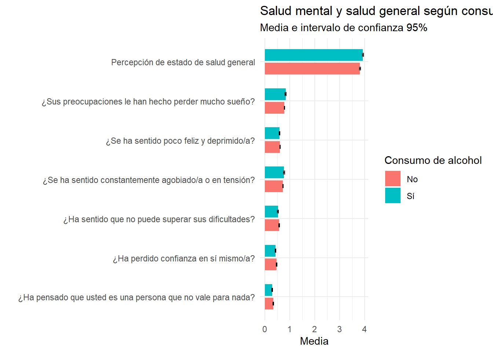
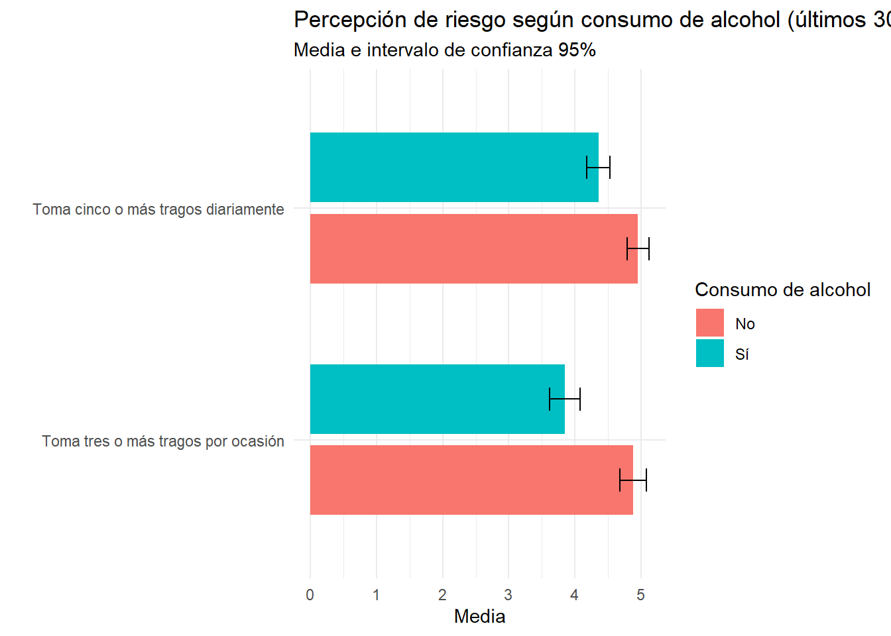
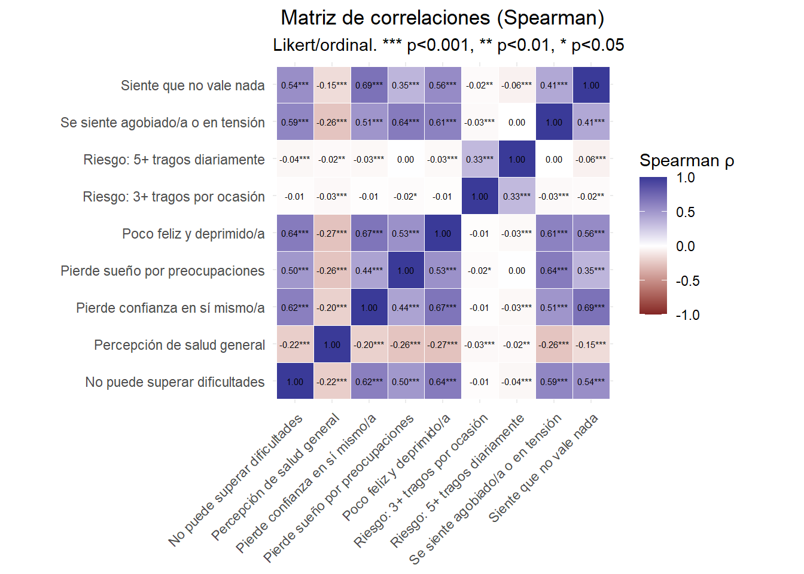
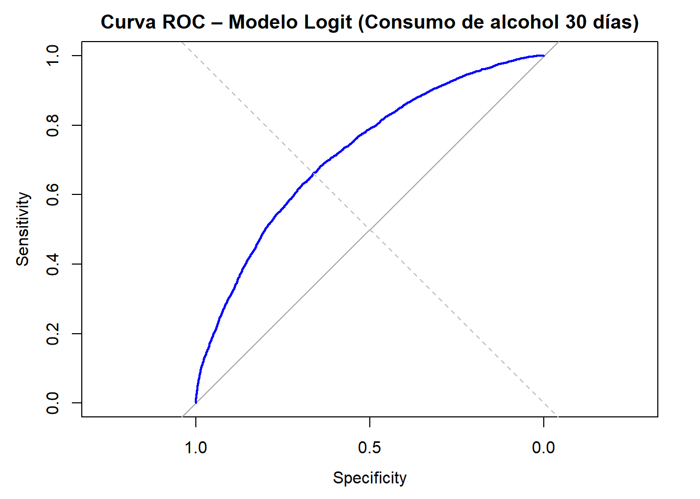
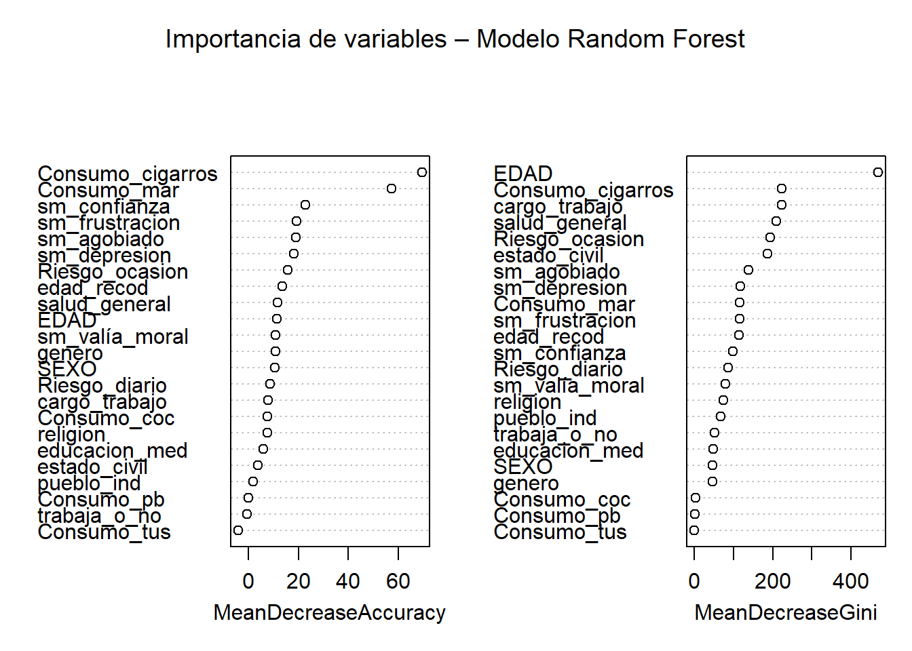
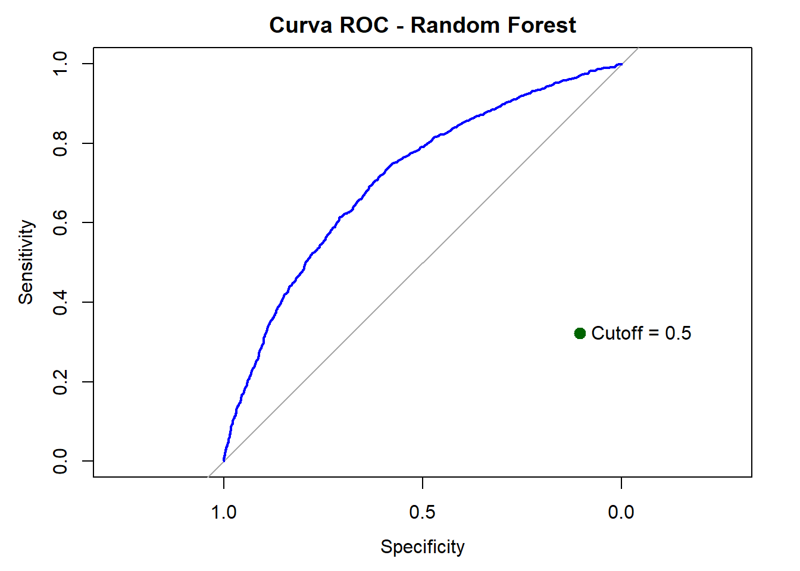

A nivel internacional, el consumo de alcohol constituye un problema relevante de salud pública por su magnitud y por los costos sociales asociados. Se estima que el alcohol es responsable de 3,3 millones de muertes anuales en el mundo (5,9% de todas las defunciones) y se vincula causalmente con más de 200 enfermedades y trastornos, aportando además una fracción significativa de la carga global de morbilidad y lesiones (SENDA & Ministerio de Salud, 2016). En el caso de las Américas el consumo promedio es más alto que en otras regiones y, en los últimos años, se han reportado aumentos de episodios de consumo excesivo (OPS, 2015), lo que refuerza la pertinencia de analizar los determinantes que sostienen estos patrones.
En Chile, los determinantes del consumo de alcohol se articulan en torno a desigualdades sociodemográficas (edad/etapa del curso como aproximación al ciclo vital adolescente, género y condiciones socioeconómicas), además de factores de contexto como normas sociales, exposición a marketing y disponibilidad. La evidencia regional muestra que el daño asociado al alcohol se distribuye de manera inequitativa: grupos socioeconómicos más desfavorecidos tienden a experimentar mayores repercusiones sanitarias ante niveles comparables de consumo, y una fracción minoritaria de bebedores concentra una proporción desmesurada del volumen total consumido (OPS, 2015).
Así como los determinantes sociodemográficos, existen factores vinculados a percepciones, conductas y salud mental que resultan relevantes para comprender el consumo de alcohol y sus impactos. La literatura sugiere que el consumo de alcohol rara vez aparece de forma aislada, especialmente durante la adolescencia, cuando tiende a integrarse en patrones de policonsumo. Por ejemplo, un estudio chileno con adolescentes escolarizados encontró que el inicio precoz del consumo de alcohol se asocia con una mayor probabilidad de consumo reciente de otras sustancias y con la presencia de otros comportamientos de riesgo, lo que es consistente con la noción de “constelaciones” de conductas interrelacionadas (Vilugrón et al., 2022). Asimismo, el mismo estudio reporta asociaciones entre el consumo y variables psicosociales como insatisfacción con la vida, insatisfacción escolar y bajo apoyo familiar.
Por otra parte, la percepción de riesgo opera como un determinante proximal relevante: cuando el consumo se evalúa como poco riesgoso, aumenta la probabilidad de iniciación y mantención, especialmente en contextos donde el alcohol se encuentra socialmente normalizado. En Chile, la medición en población escolar evidencia una marcada asimetría: el consumo ocasional presenta niveles bajos de percepción de “gran riesgo”, mientras que el consumo diario es evaluado como más peligroso por una proporción considerablemente mayor de estudiantes (SENDA, 2023). No obstante, los antecedentes citados refieren principalmente a población escolar. En este trabajo, por tanto, se buscará operacionalizar las variables antes mencionadas y examinar su asociación con el consumo de alcohol en población general, con el fin de evaluar en qué medida estos factores mantienen su relevancia más allá del contexto adolescente/escolar.
2 Objetivo:
El objetivo del estudio es estimar el efecto de factores sociodemográficos, percepción de riesgo, policonsumo de sustancias y salud mental sobre la probabilidad de consumo de alcohol en los últimos 30 días en Chile.
3 Metodología
El presente estudio se enmarca en un enfoque cuantitativo, utilizando información secundaria proveniente del Estudio Nacional de Drogas en Población General 2024, elaborado por el Servicio Nacional para la Prevención y Rehabilitación del Consumo de Drogas y Alcohol (SENDA), el cual proporciona datos representativos a nivel nacional sobre patrones de consumo y características individuales de la población.
El análisis de los datos se desarrollará utilizando herramientas y técnicas abordadas a lo largo del Diplomado en Data Science para Ciencias Sociales, incluyendo procesos de limpieza y preparación de datos, análisis descriptivo, exploración de relaciones entre variables y modelamiento estadístico. Este enfoque metodológico busca integrar el análisis estadístico con una comprensión sustantiva del fenómeno estudiado, aportando evidencia empírica que contribuya a la reflexión y toma de decisiones en el diseño de estrategias de prevención e intervención basadas en políticas públicas.
Las variables consideradas para el análisis se presentan a continuación:
Variable dependiente:
Consumo de alcohol en los últimos 30 días, construida a partir de las variables: a) Ha consumido alcohol (OH_1) b) Consumió alcohol los últimos 30 días (OH_4)
Variables independientes:
La inclusión de variables independientes se estructuró en función de cuatro líneas temáticas:
a) Sociodemográficos
Edad (EDAD) Estado civil (DP_2) Pertenencia a un pueblo originario (DP_4) Adhiere a una religión (DP_5) Género (DP_8) Nivel de escolaridad (DP_12) Trabajó la semana pasada (CO_1) Cargo en el trabajo (CO_6)
b) Consumo de otras sustancias los últimos 30 días
Consumo de cigarrillos (ST_1/ST_4) Consumo de marihuana (MAR_1/MAR_4) Consumo de cocaína (COC_1/COC_4) Consumo de pasta base (PB_1/PB_4) Consumo de tusi (TUS_1/TUS_4)
c) Salud mental
Percepción de estado de salud general (ST_1) Habitualidad de problemas de salud mental: ¿Sus preocupaciones le han hecho perder mucho sueño? (T_SG_1_B) Habitualidad de problemas de salud mental: Y, ¿Se ha sentido constantemente agobiado/a o en tensión? (T_SG_1_E) Habitualidad de problemas de salud mental: ¿Ha sentido que no puede superar sus dificultades? (T_SG_1_F) Habitualidad de problemas de salud mental: ¿Se ha sentido poco feliz y deprimido/a? (T_SG_1_I) Habitualidad de problemas de salud mental: ¿Ha perdido confianza en sí mismo/a? (T_SG_1_J) Habitualidad de problemas de salud mental: ¿Ha pensado que usted es una persona que no vale para nada? (T_SG_1_K)
d) Percepción de riesgo
Toma tres o más tragos por ocasión (T_PR_1_2) Toma cinco o más tragos diariamente (T_PR_1_3)
4 Carga de bases de datos
En esta sección se realizará la carga de la base de datos que se utilizará en el estudio, junto con la importación de las librerías necesarias para este proceso.
Code
# Libreriaslibrary(dplyr)library(rio)library(skimr)library(ggplot2)library(tidyverse)library(plotly)library(scales)library(forcats)library(stringr)# Semilla para reproducibilidadset.seed(123)# En la carpeta del capstone descargar "Base Publica ENPG 2024 (Stata 16).dta"# Cargar base de datos ENPG_2024 <-import("Base Publica ENPG 2024 (Stata 16).dta")
5 Exploración, limpieza y transformación de los datos
En esta sección se explorará la base de datos importada y, posteriormente, se realizará su limpieza con el fin de construir un data frame que incluya únicamente las variables que serán utilizadas en el análisis.
A continuación, se recodificarán las variables que se incorporarán en los modelos, con el objetivo de favorecer la parsimonia en la interpretación, focalizar y organizar las variables de consumo, y asegurar que su codificación quede alineada con la información presentada en el capítulo de contexto.
5.1) Creación variable de consumo de alcohol los últimos 30 días (dependiente)
Esta variable se construirá como un índice a partir de las preguntas “¿Ha consumido alcohol alguna vez en la vida?” y “¿Cuándo fue la última vez que consumió alcohol?”, delimitando el consumo al periodo de los últimos 30 días.
5.2) Creación de variables independientes En este apartado se realizarán las recodificaciones de las variables independientes.
Code
##1. FolioENPG_filtrado <- ENPG_filtrado %>%rename(Folio = RESPONDENT_SERIAL)# Sociodemográficas##a) EdadENPG_filtrado <- ENPG_filtrado%>%mutate(edad_recod =case_when( EDAD %in%c(12:18)~1, EDAD %in%c(19:25)~2, EDAD %in%c(26:34)~3, EDAD %in%c(35:44)~4, EDAD %in%c(45:70)~5 ) )##b) Estado civilENPG_filtrado <- ENPG_filtrado %>%rename(estado_civil = DP_2)##c. Pertenencia a un grupo originarioENPG_filtrado <- ENPG_filtrado %>%mutate(pueblo_ind =case_when( DP_4 %in%1:12~"Indígena", DP_4 ==13~"No indígena",TRUE~NA_character_ ))##d. Adhiere a una religiónENPG_filtrado <- ENPG_filtrado %>%mutate(religion =case_when( DP_5 %in%1:11~"Religión", DP_5 ==12~"No religión",TRUE~NA_character_ ))##e) GéneroENPG_filtrado <- ENPG_filtrado %>%mutate(genero =case_when( SEXO ==1~"Masculino", SEXO %in%c(2:6, 99) ~"Otro género",TRUE~NA_character_ ),genero =factor(genero),genero =relevel(genero, ref ="Otro género") )##f) Nivel de escolaridadENPG_filtrado <- ENPG_filtrado%>%mutate(escolaridad =case_when( DP_12 %in%1:4~"Enseñanza básica o menos", DP_12 %in%5:8~"Enseñanza media", DP_12 %in%9:13~"Enseñanza superior o más", DP_12 %in%88~"No sabe" ) )ENPG_filtrado <- ENPG_filtrado %>%mutate(educacion_med =case_when( DP_12 %in%5:13~"Tiene educación media o superior", DP_12 %in%c(1:4, 88) ~"No tiene educación media o superior", TRUE~NA_character_ ))# g) Trabajó la semana pasada/Cargo trabajo (renombrando variables)ENPG_filtrado <- ENPG_filtrado %>%rename(trabaja_o_no = CO_1, cargo_trabajo = CO_6)##Consumo de otras sustancias (construcción de variables)# a) Consumo de cigarrillosENPG_filtrado <- ENPG_filtrado %>%mutate(Consumo_cigarros =case_when( ST_2 ==2~0, ST_5 ==1~1, ST_5 ==2~0, ST_5 ==3~0 ) )ENPG_filtrado <- ENPG_filtrado %>%mutate(Consumo_cigarros =case_when( Consumo_cigarros ==1~"Sí", Consumo_cigarros ==0~"No",TRUE~NA_character_ ))# b) Consumo de marihuanaENPG_filtrado <- ENPG_filtrado %>%mutate(Consumo_mar =case_when( MAR_1 ==2~0, #NO HA CONSUMIDO MARIHUANA MAR_4 ==1~1, #HA CONSUMIDO ULTIMOS 30D MAR_4 ==2~0, MAR_4 ==3~0) )ENPG_filtrado <- ENPG_filtrado %>%mutate (Consumo_mar =case_when(Consumo_mar ==1~"Sí",Consumo_mar ==0~"No",TRUE~NA_character_))# b) Consumo de cocaínaENPG_filtrado <- ENPG_filtrado %>%mutate(Consumo_coc =case_when( COC_1 ==2~0, #NO HA CONSUMIDO COCAINA COC_4 ==1~1, #HA CONSUMIDO ULTIMOS 30D COC_4 ==2~0, COC_4 ==3~0) )ENPG_filtrado <- ENPG_filtrado %>%mutate (Consumo_coc =case_when(Consumo_coc ==1~"Sí",Consumo_coc ==0~"No",TRUE~NA_character_))# c) Consumo de pasta baseENPG_filtrado <- ENPG_filtrado %>%mutate(Consumo_pb =case_when( PB_1 ==2~0, #NO HA CONSUMIDO PASTA BASE PB_4 ==1~1, #HA CONSUMIDO ULTIMOS 30D PB_4 ==2~0, PB_4 ==3~0) )ENPG_filtrado <- ENPG_filtrado %>%mutate (Consumo_pb =case_when(Consumo_pb ==1~"Sí",Consumo_pb ==0~"No",TRUE~NA_character_))# b) Consumo de tusiENPG_filtrado <- ENPG_filtrado %>%mutate(Consumo_tus =case_when( TUS_1 ==2~0, #NO HA CONSUMIDO TUSI TUS_4 ==1~1, #HA CONSUMIDO ULTIMOS 30D TUS_4 ==2~0, TUS_4 ==3~0) )ENPG_filtrado <- ENPG_filtrado %>%mutate (Consumo_tus =case_when(Consumo_tus ==1~"Sí",Consumo_tus ==0~"No",TRUE~NA_character_))## Salud mental y general# a) Salud GeneralENPG_filtrado <- ENPG_filtrado %>%rename(salud_general = ST_1) ENPG_filtrado <- ENPG_filtrado %>%mutate(salud_general =case_when( salud_general ==88~NA, salud_general ==99~NA,TRUE~ salud_general ))# b) Salud Mental: ENPG_filtrado <- ENPG_filtrado %>%rename(sm_sueno = T_SG_1_B, sm_agobiado = T_SG_1_E, sm_frustracion = T_SG_1_F, sm_depresion = T_SG_1_I, sm_confianza = T_SG_1_J, sm_valía_moral = T_SG_1_K)## Percepción de riesgoENPG_filtrado <- ENPG_filtrado %>%rename (Riesgo_ocasion = T_PR_1_2,Riesgo_diario = T_PR_1_3)ENPG_filtrado <- ENPG_filtrado %>%mutate(Riesgo_ocasion_rec =case_when( Riesgo_ocasion ==88~NA_real_,TRUE~ Riesgo_ocasion ),Riesgo_diario_rec =case_when( Riesgo_diario ==88~NA_real_,TRUE~ Riesgo_diario ) )
6 Hipótesis de trabajo
Existe una asociación significativa entre el género y el consumo de alcohol, siendo las personas de género masculino las que presentan una mayor probabilidad de consumo, respecto de los otros géneros de las personas encuestadas.
Existe una asociación significativa entre el consumo de alcohol y el consumo de otras drogas, de manera que quienes reportan consumo de sustancias psicoactivas, tienen mayor probabilidad de haber consumido alcohol los últimos 30 días.
Las personas que presentan mayor habitualidad en problemas de salud mental tienen mayor probabilidad de reportar consumo de alcohol los últimos 30 días.
Las personas que presentan una menor percepción de riesgo asociada al consumo de alcohol tienden a mayor probabilidad de consumo de alcohol, en comparación con aquellas que perciben un mayor riesgo.
7 Análisis descriptivo
En primera instancia, se realizará un análisis descriptivo para caracterizar la distribución de las variables de interés y explorar su relación con el consumo de alcohol en los últimos 30 días, que corresponde a la variable principal del estudio. En particular, se examinará cómo se comportan las variables seleccionadas al comparar los grupos que reportan consumo reciente versus quienes no lo reportan.
Para las variables nominales, se analizará su distribución en función del consumo de alcohol mediante gráficos de barras apiladas, lo que permitirá visualizar diferencias en la composición de categorías entre ambos grupos. En el caso de las variables numéricas u ordinales, se estimarán correlaciones con el consumo de alcohol (según corresponda al nivel de medición) y, adicionalmente, se utilizarán gráficos de caja para describir la dispersión y las diferencias en la distribución de estas variables entre personas que consumieron alcohol en los últimos 30 días y quienes no, facilitando la identificación de patrones, asimetrías y posibles valores atípicos relevantes para el análisis posterior.
# A tibble: 2 × 2
alcohol_30d_plot suma_prop
<fct> <dbl>
1 No consume alcohol 1
2 Sí consume alcohol 1
Code
# Gráfico: siempre suma 100%Grafico_estado_civil <-ggplot(df_estado_civil, aes(y = alcohol_30d_plot, x = Conteo, fill = estado_civil_plot, text = text)) +geom_col(position ="fill", color ="black", width =0.65) +geom_text(aes(label = label_pct),position =position_fill(vjust =0.5),color ="white",size =3 ) +scale_x_continuous(labels =percent_format(accuracy =1), expand =c(0, 0)) +labs(title ="Estado civil según consumo de alcohol (últimos 30 días)",x ="Porcentaje",y =NULL,fill ="Estado civil" ) +theme_minimal() +theme(plot.title =element_text(hjust =0.5))ggplotly(Grafico_estado_civil, tooltip ="text")
En el grupo de personas que no consume alcohol en los últimos 30 días, la mayor proporción corresponde a solteros/as (56,9%), seguida por casados/as (27,0%) y divorciados/as (7,9%). El 8,2% restante se distribuye entre viudos/as, anulados/as y convivientes civiles.
En cambio, entre quienes sí consumen alcohol, predominan los/las solteros/as (60,4%), luego los/las casados/as (24,8%) y los/las divorciados/as (8,4%); el 6,4% restante se reparte entre viudos/as, anulados/as y convivientes civiles.
En términos comparativos, el consumo de alcohol se asocia con una mayor proporción de solteros/as y una menor proporción de casados/as, mientras que la proporción de divorciados/as se mantiene relativamente similar entre ambos grupos.
Consumo de alcohol según pertenencia a un pueblo originario
Code
# Datos para gráfico ENPG_filtrado <- ENPG_filtrado %>%mutate(pueblo_ind_plot =case_when( DP_4 %in%1:12~"Pertenece a un pueblo originario", DP_4 ==13~"No pertenece a un pueblo originario",TRUE~NA_character_ ),pueblo_ind_plot =factor( pueblo_ind_plot,levels =c("Pertenece a un pueblo originario", "No pertenece a un pueblo originario") ) )df_pueblo <- ENPG_filtrado %>%filter(!is.na(alcohol_30d_plot), !is.na(pueblo_ind_plot)) %>%count(alcohol_30d_plot, pueblo_ind_plot, name ="Conteo") %>%complete(alcohol_30d_plot, pueblo_ind_plot, fill =list(Conteo =0)) %>%group_by(alcohol_30d_plot) %>%mutate(Total =sum(Conteo),Prop =ifelse(Total ==0, 0, Conteo / Total),label_pct =ifelse(Conteo ==0, "", percent(Prop, accuracy =0.1)),text =paste0("Consumo: ", alcohol_30d_plot,"<br>Pueblo originario: ", pueblo_ind_plot,"<br>Porcentaje: ", percent(Prop, accuracy =0.1),"<br>n: ", Conteo ) ) %>%ungroup()# Chequeo df_pueblo %>%group_by(alcohol_30d_plot) %>%summarise(suma_prop =sum(Prop))
# A tibble: 2 × 2
alcohol_30d_plot suma_prop
<fct> <dbl>
1 No consume alcohol 1
2 Sí consume alcohol 1
Code
# Gráfico: siempre suma 100%Grafico_pueblo <-ggplot(df_pueblo, aes(y = alcohol_30d_plot, x = Conteo, fill = pueblo_ind_plot, text = text)) +geom_col(position ="fill", color ="black", width =0.65) +geom_text(aes(label = label_pct),position =position_fill(vjust =0.5),color ="white",size =3 ) +scale_x_continuous(labels =percent_format(accuracy =1), expand =c(0, 0)) +labs(title ="Pertenencia a pueblo originario según consumo de alcohol (últimos 30 días)",x ="Porcentaje",y =NULL,fill ="Pueblo originario" ) +theme_minimal() +theme(plot.title =element_text(hjust =0.5))ggplotly(Grafico_pueblo, tooltip ="text")
En el grupo de personas que no consume alcohol en los últimos 30 días, el 12,8% declara pertenecer a un pueblo originario, mientras que el 87,2% señala no pertenecer.
Por su parte, entre quienes sí consumen alcohol, el 13,5% indica pertenecer a un pueblo originario y el 86,5% no pertenecer. En general, las diferencias entre ambos grupos son muy pequeñas, observándose una proporción apenas mayor de pertenencia a pueblo originario entre quienes consumen alcohol.
Consumo de alcohol según adherencia a una religión
Code
# Variable creada solo para el gráfico ENPG_filtrado <- ENPG_filtrado %>%mutate(religion_plot =case_when( DP_5 %in%1:11~"Adhiere a una religión", DP_5 ==12~"No adhiere a una religión",TRUE~NA_character_ ),religion_plot =factor( religion_plot,levels =c("Adhiere a una religión", "No adhiere a una religión") ) )# Datos para gráfico (100% apilado dentro de cada barra)df_religion <- ENPG_filtrado %>%filter(!is.na(alcohol_30d_plot), !is.na(religion_plot)) %>%count(alcohol_30d_plot, religion_plot, name ="Conteo") %>%complete(alcohol_30d_plot, religion_plot, fill =list(Conteo =0)) %>%group_by(alcohol_30d_plot) %>%mutate(Total =sum(Conteo),Prop =ifelse(Total ==0, 0, Conteo / Total),label_pct =ifelse(Conteo ==0, "", percent(Prop, accuracy =0.1)),text =paste0("Consumo: ", alcohol_30d_plot,"<br>Religión: ", religion_plot,"<br>Porcentaje: ", percent(Prop, accuracy =0.1),"<br>n: ", Conteo ) ) %>%ungroup()# Chequeodf_religion %>%group_by(alcohol_30d_plot) %>%summarise(suma_prop =sum(Prop))
# A tibble: 2 × 2
alcohol_30d_plot suma_prop
<fct> <dbl>
1 No consume alcohol 1
2 Sí consume alcohol 1
Code
# Gráfico: siempre suma 100%Grafico_religion <-ggplot(df_religion, aes(y = alcohol_30d_plot, x = Conteo, fill = religion_plot, text = text)) +geom_col(position ="fill", color ="black", width =0.65) +geom_text(aes(label = label_pct),position =position_fill(vjust =0.5),color ="white",size =3 ) +scale_x_continuous(labels =percent_format(accuracy =1), expand =c(0, 0)) +labs(title ="Religión según consumo de alcohol (últimos 30 días)",x ="Porcentaje",y =NULL,fill ="Religión" ) +theme_minimal() +theme(plot.title =element_text(hjust =0.5))ggplotly(Grafico_religion, tooltip ="text")
En el grupo de personas que no consume alcohol en los últimos 30 días, el 73,7% señala que adhiere a una religión, mientras que el 26,3% indica no adherir.
En cambio, entre quienes sí consumen alcohol, el 66,0% declara adherir a una religión y el 34,0% no adherir. En comparación, se observa que en el grupo que consume alcohol hay una menor proporción de personas religiosas y una mayor proporción de personas que no adhieren a una religión.
Consumo de alcohol según género
Code
# Variable creada solo para el gráfico ENPG_filtrado <- ENPG_filtrado %>%mutate(genero_plot =case_when( SEXO ==1~"Masculino", SEXO %in%c(2:6, 99) ~"Otro género",TRUE~NA_character_ ),genero_plot =factor(genero_plot),genero_plot =relevel(genero_plot, ref ="Otro género") )# Datos para gráfico: 100% apilado dentro de cada barradf_genero <- ENPG_filtrado %>%filter(!is.na(alcohol_30d_plot), !is.na(genero_plot)) %>%count(alcohol_30d_plot, genero_plot, name ="Conteo") %>%complete(alcohol_30d_plot, genero_plot, fill =list(Conteo =0)) %>%group_by(alcohol_30d_plot) %>%mutate(Total =sum(Conteo),Prop =ifelse(Total ==0, 0, Conteo / Total),label_pct =ifelse(Conteo ==0, "", percent(Prop, accuracy =0.1)),text =paste0("Consumo: ", alcohol_30d_plot,"<br>Género: ", genero_plot,"<br>Porcentaje: ", percent(Prop, accuracy =0.1),"<br>n: ", Conteo ) ) %>%ungroup()# Chequeodf_genero %>%group_by(alcohol_30d_plot) %>%summarise(suma_prop =sum(Prop))
# A tibble: 2 × 2
alcohol_30d_plot suma_prop
<fct> <dbl>
1 No consume alcohol 1
2 Sí consume alcohol 1
Code
# Gráfico: siempre suma 100%Grafico_genero <-ggplot(df_genero, aes(y = alcohol_30d_plot, x = Conteo, fill = genero_plot, text = text)) +geom_col(position ="fill", color ="black", width =0.65) +geom_text(aes(label = label_pct),position =position_fill(vjust =0.5),color ="white",size =3 ) +scale_x_continuous(labels =percent_format(accuracy =1), expand =c(0, 0)) +labs(title ="Género según consumo de alcohol (últimos 30 días)",x ="Porcentaje",y =NULL,fill ="Género" ) +theme_minimal() +theme(plot.title =element_text(hjust =0.5))ggplotly(Grafico_genero, tooltip ="text")
En el grupo de personas que no consume alcohol en los últimos 30 días, el 64,9% se identifica como otro género, mientras que el 35,1% corresponde a masculino.
En cambio, entre quienes sí consumen alcohol, el 52,0% corresponde a masculino y el 48,0% a otro género. En comparación, se observa que en el grupo que consume alcohol hay una mayor proporción de personas masculinas, mientras que en el grupo que no consume alcohol predomina otro género.
Distribución de escolaridad media según consumo de alcohol
Code
# VariableENPG_filtrado <- ENPG_filtrado %>%mutate(educacion_med_plot =case_when( DP_12 %in%5:13~"Tiene educación media o superior", DP_12 %in%c(1:4, 88) ~"No tiene educación media o superior",TRUE~NA_character_ ),educacion_med_plot =factor( educacion_med_plot,levels =c("Tiene educación media o superior", "No tiene educación media o superior") ) )# Datos para gráfico: 100% apilado dentro de cada barradf_educacion_med <- ENPG_filtrado %>%filter(!is.na(alcohol_30d_plot), !is.na(educacion_med_plot)) %>%count(alcohol_30d_plot, educacion_med_plot, name ="Conteo") %>%complete(alcohol_30d_plot, educacion_med_plot, fill =list(Conteo =0)) %>%group_by(alcohol_30d_plot) %>%mutate(Total =sum(Conteo),Prop =ifelse(Total ==0, 0, Conteo / Total),label_pct =ifelse(Conteo ==0, "", percent(Prop, accuracy =0.1)),text =paste0("Consumo: ", alcohol_30d_plot,"<br>Educación: ", educacion_med_plot,"<br>Porcentaje: ", percent(Prop, accuracy =0.1),"<br>n: ", Conteo ) ) %>%ungroup()# Chequeodf_educacion_med %>%group_by(alcohol_30d_plot) %>%summarise(suma_prop =sum(Prop))
# A tibble: 2 × 2
alcohol_30d_plot suma_prop
<fct> <dbl>
1 No consume alcohol 1
2 Sí consume alcohol 1
Code
# Gráfico: siempre suma 100%Grafico_educacion_med <-ggplot(df_educacion_med, aes(y = alcohol_30d_plot, x = Conteo, fill = educacion_med_plot, text = text)) +geom_col(position ="fill", color ="black", width =0.65) +geom_text(aes(label = label_pct),position =position_fill(vjust =0.5),color ="white",size =3 ) +scale_x_continuous(labels =percent_format(accuracy =1), expand =c(0, 0)) +labs(title ="Educación media o superior según consumo de alcohol (últimos 30 días)",x ="Porcentaje",y =NULL,fill ="Educación" ) +theme_minimal() +theme(plot.title =element_text(hjust =0.5))ggplotly(Grafico_educacion_med, tooltip ="text")
En el grupo de personas que no consume alcohol en los últimos 30 días, el 82,1% tiene educación media o superior, mientras que el 17,9% no la tiene.
Por su parte, entre quienes sí consumen alcohol, el 90,9% presenta educación media o superior y el 9,1% no. En comparación, se observa que en el grupo que consume alcohol hay una mayor proporción de personas con educación media o superior y una menor proporción de quienes no la tienen.
Trabajo según consumo de alcohol
Code
# Variable creada sólo para el gráfico ENPG_filtrado <- ENPG_filtrado %>%mutate(trabaja_o_no_plot =case_when( trabaja_o_no %in%c(1, "1") ~"Sí trabaja", trabaja_o_no %in%c(2, "2") ~"No trabaja",TRUE~NA_character_ ),trabaja_o_no_plot =factor(trabaja_o_no_plot, levels =c("Sí trabaja", "No trabaja")) )# Datos para gráfico: 100% apilado dentro de cada barradf_trabaja <- ENPG_filtrado %>%filter(!is.na(alcohol_30d_plot), !is.na(trabaja_o_no_plot)) %>%count(alcohol_30d_plot, trabaja_o_no_plot, name ="Conteo") %>%complete(alcohol_30d_plot, trabaja_o_no_plot, fill =list(Conteo =0)) %>%group_by(alcohol_30d_plot) %>%mutate(Total =sum(Conteo),Prop =ifelse(Total ==0, 0, Conteo / Total),label_pct =ifelse(Conteo ==0, "", percent(Prop, accuracy =0.1)),text =paste0("Consumo: ", alcohol_30d_plot,"<br>Trabaja: ", trabaja_o_no_plot,"<br>Porcentaje: ", percent(Prop, accuracy =0.1),"<br>n: ", Conteo ) ) %>%ungroup()# Chequeodf_trabaja %>%group_by(alcohol_30d_plot) %>%summarise(suma_prop =sum(Prop))
# A tibble: 2 × 2
alcohol_30d_plot suma_prop
<fct> <dbl>
1 No consume alcohol 1
2 Sí consume alcohol 1
Code
# Gráfico: siempre suma 100%Grafico_trabaja <-ggplot(df_trabaja, aes(y = alcohol_30d_plot, x = Conteo, fill = trabaja_o_no_plot, text = text)) +geom_col(position ="fill", color ="black", width =0.65) +geom_text(aes(label = label_pct),position =position_fill(vjust =0.5),color ="white",size =3 ) +scale_x_continuous(labels =percent_format(accuracy =1), expand =c(0, 0)) +labs(title ="Trabajo según consumo de alcohol (últimos 30 días)",x ="Porcentaje",y =NULL,fill ="Trabajo" ) +theme_minimal() +theme(plot.title =element_text(hjust =0.5))ggplotly(Grafico_trabaja, tooltip ="text")
En el grupo de personas que no consume alcohol en los últimos 30 días, el 62,1% declara que sí trabaja, mientras que el 37,9% no trabaja.
En cambio, entre quienes sí consumen alcohol, el 76,1% señala que sí trabaja y el 23,9% no trabaja. En comparación, se observa que en el grupo que consume alcohol hay una mayor proporción de personas que trabajan y una menor proporción de quienes no trabajan.
Cargo en el trabajo según consumo de alcohol
Code
# Variable creada solo para el gráficoENPG_filtrado <- ENPG_filtrado %>%mutate(cargo_trabajo_plot =case_when( cargo_trabajo %in%c(1, "1") ~"Patrón o empleador/a", cargo_trabajo %in%c(2, "2") ~"Trabajador/a por cuenta propia", cargo_trabajo %in%c(3, "3") ~"Empleado/a u obrero/a sector público", cargo_trabajo %in%c(4, "4") ~"Empleado/a u obrero/a empresas públicas", cargo_trabajo %in%c(5, "5") ~"Empleado/a u obrero/a sector privado", cargo_trabajo %in%c(6, "6") ~"Servicio doméstico puertas adentro", cargo_trabajo %in%c(7, "7") ~"Servicio doméstico puertas afuera", cargo_trabajo %in%c(8, "8") ~"F.F.A.A. y del Orden", cargo_trabajo %in%c(9, "9") ~"Familiar no remunerado",TRUE~NA_character_ ),cargo_trabajo_plot =factor( cargo_trabajo_plot,levels =c("Patrón o empleador/a","Trabajador/a por cuenta propia","Empleado/a u obrero/a sector público","Empleado/a u obrero/a empresas públicas","Empleado/a u obrero/a sector privado","Servicio doméstico puertas adentro","Servicio doméstico puertas afuera","F.F.A.A. y del Orden","Familiar no remunerado" ) ) )# 3) Datos para gráfico: 100% apilado dentro de cada barradf_cargo_trabajo <- ENPG_filtrado %>%filter(!is.na(alcohol_30d_plot), !is.na(cargo_trabajo_plot)) %>%count(alcohol_30d_plot, cargo_trabajo_plot, name ="Conteo") %>%complete(alcohol_30d_plot, cargo_trabajo_plot, fill =list(Conteo =0)) %>%group_by(alcohol_30d_plot) %>%mutate(Total =sum(Conteo),Prop =ifelse(Total ==0, 0, Conteo / Total),label_pct =ifelse(Conteo ==0, "", percent(Prop, accuracy =0.1)),text =paste0("Consumo: ", alcohol_30d_plot,"<br>Cargo: ", cargo_trabajo_plot,"<br>Porcentaje: ", percent(Prop, accuracy =0.1),"<br>n: ", Conteo ) ) %>%ungroup()# Chequeodf_cargo_trabajo %>%group_by(alcohol_30d_plot) %>%summarise(suma_prop =sum(Prop))
# A tibble: 2 × 2
alcohol_30d_plot suma_prop
<fct> <dbl>
1 No consume alcohol 1
2 Sí consume alcohol 1
Code
# Gráfico: siempre suma 100%Grafico_cargo_trabajo <-ggplot(df_cargo_trabajo, aes(y = alcohol_30d_plot, x = Conteo, fill = cargo_trabajo_plot, text = text)) +geom_col(position ="fill", color ="black", width =0.65) +geom_text(aes(label = label_pct),position =position_fill(vjust =0.5),color ="white",size =3 ) +scale_x_continuous(labels =percent_format(accuracy =1), expand =c(0, 0)) +labs(title ="Cargo en el trabajo según consumo de alcohol (últimos 30 días)",x ="Porcentaje",y =NULL,fill ="Cargo en el trabajo" ) +theme_minimal() +theme(plot.title =element_text(hjust =0.5),legend.position ="right" )ggplotly(Grafico_cargo_trabajo, tooltip ="text")
En el grupo de personas que no consume alcohol en los últimos 30 días, la mayor proporción corresponde a empleados/as u obreros/as del sector privado (37,2%), seguido por trabajadores/as por cuenta propia (31,7%). Luego aparecen, con proporciones similares, empleados/as del sector público (9,6%) y empleados/as de empresas públicas (9,4%), mientras que patrón o empleador/a representa 4,1%. El porcentaje restante se distribuye en categorías con participación muy baja (servicio doméstico, F.F.A.A. y del Orden y familiar no remunerado).
Por su parte, entre quienes sí consumen alcohol, predomina aún más la categoría empleado/a u obrero/a del sector privado (47,3%), seguida por trabajador/a por cuenta propia (26,9%). Luego se ubican empleado/a u obrero/a del sector público (9,6%) y empleado/a u obrero/a de empresas públicas (9,1%), mientras que patrón o empleador/a alcanza 3,6%; el resto se reparte en proporciones muy pequeñas en las demás categorías.
Consumo de cigarrillos según consumo de alcohol
Code
# Variable solo para el gráfico ENPG_filtrado <- ENPG_filtrado %>%mutate(Consumo_cigarros_plot =case_when(str_to_lower(str_squish(as.character(Consumo_cigarros))) %in%c("sí", "si") ~"Sí",str_to_lower(str_squish(as.character(Consumo_cigarros))) =="no"~"No",TRUE~NA_character_ ),Consumo_cigarros_plot =factor(Consumo_cigarros_plot, levels =c("Sí", "No")) )# Datos para gráfico: 100% apilado dentro de cada barradf_cigarros <- ENPG_filtrado %>%filter(!is.na(alcohol_30d_plot), !is.na(Consumo_cigarros_plot)) %>%count(alcohol_30d_plot, Consumo_cigarros_plot, name ="Conteo") %>%complete(alcohol_30d_plot, Consumo_cigarros_plot, fill =list(Conteo =0)) %>%group_by(alcohol_30d_plot) %>%mutate(Total =sum(Conteo),Prop =ifelse(Total ==0, 0, Conteo / Total),label_pct =ifelse(Conteo ==0, "", percent(Prop, accuracy =0.1)),text =paste0("Consumo alcohol: ", alcohol_30d_plot,"<br>Consumo cigarros: ", Consumo_cigarros_plot,"<br>Porcentaje: ", percent(Prop, accuracy =0.1),"<br>n: ", Conteo ) ) %>%ungroup()# Chequeodf_cigarros %>%group_by(alcohol_30d_plot) %>%summarise(suma_prop =sum(Prop))
# A tibble: 2 × 2
alcohol_30d_plot suma_prop
<fct> <dbl>
1 No consume alcohol 1
2 Sí consume alcohol 1
Code
# Gráfico: siempre suma 100%Grafico_cigarros <-ggplot(df_cigarros, aes(y = alcohol_30d_plot, x = Conteo, fill = Consumo_cigarros_plot, text = text)) +geom_col(position ="fill", color ="black", width =0.65) +geom_text(aes(label = label_pct),position =position_fill(vjust =0.5),color ="white",size =3 ) +scale_x_continuous(labels =percent_format(accuracy =1), expand =c(0, 0)) +labs(title ="Consumo de cigarros según consumo de alcohol (últimos 30 días)",x ="Porcentaje",y =NULL,fill ="Consumo de cigarros" ) +theme_minimal() +theme(plot.title =element_text(hjust =0.5))ggplotly(Grafico_cigarros, tooltip ="text")
En el grupo de personas que no consume alcohol en los últimos 30 días, el 16,7% declara que sí consume cigarros, mientras que el 83,3% señala que no consume.
En cambio, entre quienes sí consumen alcohol, el 40,7% indica que sí consume cigarros y el 59,3% que no. En comparación, se observa que el consumo de alcohol se asocia con una mayor proporción de consumo de cigarros, aumentando desde 16,7% en quienes no consumen alcohol a 40,7% en quienes sí consumen.
# Datos para gráfico: 100% apilado dentro de cada barradf_marihuana <- ENPG_filtrado %>%filter(!is.na(alcohol_30d_plot), !is.na(Consumo_mar_plot)) %>%count(alcohol_30d_plot, Consumo_mar_plot, name ="Conteo") %>%complete(alcohol_30d_plot, Consumo_mar_plot, fill =list(Conteo =0)) %>%group_by(alcohol_30d_plot) %>%mutate(Total =sum(Conteo),Prop =ifelse(Total ==0, 0, Conteo / Total),label_pct =ifelse(Conteo ==0, "", percent(Prop, accuracy =0.1)),text =paste0("Consumo alcohol: ", alcohol_30d_plot,"<br>Consumo marihuana: ", Consumo_mar_plot,"<br>Porcentaje: ", percent(Prop, accuracy =0.1),"<br>n: ", Conteo ) ) %>%ungroup()# Chequeodf_marihuana %>%group_by(alcohol_30d_plot) %>%summarise(suma_prop =sum(Prop))
# A tibble: 2 × 2
alcohol_30d_plot suma_prop
<fct> <dbl>
1 No consume alcohol 1
2 Sí consume alcohol 1
Code
# Gráfico: siempre suma 100%Grafico_marihuana <-ggplot(df_marihuana, aes(y = alcohol_30d_plot, x = Conteo, fill = Consumo_mar_plot, text = text)) +geom_col(position ="fill", color ="black", width =0.65) +geom_text(aes(label = label_pct),position =position_fill(vjust =0.5),color ="white",size =3 ) +scale_x_continuous(labels =percent_format(accuracy =1), expand =c(0, 0)) +labs(title ="Consumo de marihuana según consumo de alcohol (últimos 30 días)",x ="Porcentaje",y =NULL,fill ="Consumo de marihuana" ) +theme_minimal() +theme(plot.title =element_text(hjust =0.5))ggplotly(Grafico_marihuana, tooltip ="text")
En el grupo de personas que no consume alcohol en los últimos 30 días, el 1,9% declara que sí consume marihuana, mientras que el 98,1% indica que no consume.
En cambio, entre quienes sí consumen alcohol, el 10,8% señala que sí consume marihuana y el 89,2% que no. En comparación, se observa que el consumo de alcohol se asocia con una mayor proporción de consumo de marihuana, aumentando desde 1,9% en quienes no consumen alcohol a 10,8% en quienes sí consumen.
# Datos para gráfico: 100% apilado dentro de cada barradf_cocaina <- ENPG_filtrado %>%filter(!is.na(alcohol_30d_plot), !is.na(Consumo_coc_plot)) %>%count(alcohol_30d_plot, Consumo_coc_plot, name ="Conteo") %>%complete(alcohol_30d_plot, Consumo_coc_plot, fill =list(Conteo =0)) %>%group_by(alcohol_30d_plot) %>%mutate(Total =sum(Conteo),Prop =ifelse(Total ==0, 0, Conteo / Total),label_pct =ifelse(Conteo ==0, "", percent(Prop, accuracy =0.1)),text =paste0("Consumo alcohol: ", alcohol_30d_plot,"<br>Consumo cocaína: ", Consumo_coc_plot,"<br>Porcentaje: ", percent(Prop, accuracy =0.1),"<br>n: ", Conteo ) ) %>%ungroup()# Chequeodf_cocaina %>%group_by(alcohol_30d_plot) %>%summarise(suma_prop =sum(Prop))
# A tibble: 2 × 2
alcohol_30d_plot suma_prop
<fct> <dbl>
1 No consume alcohol 1
2 Sí consume alcohol 1
Code
# Gráfico: siempre suma 100%Grafico_cocaina <-ggplot(df_cocaina, aes(y = alcohol_30d_plot, x = Conteo, fill = Consumo_coc_plot, text = text)) +geom_col(position ="fill", color ="black", width =0.65) +geom_text(aes(label = label_pct),position =position_fill(vjust =0.5),color ="white",size =3 ) +scale_x_continuous(labels =percent_format(accuracy =1), expand =c(0, 0)) +labs(title ="Consumo de cocaína según consumo de alcohol (últimos 30 días)",x ="Porcentaje",y =NULL,fill ="Consumo de cocaína" ) +theme_minimal() +theme(plot.title =element_text(hjust =0.5))ggplotly(Grafico_cocaina, tooltip ="text")
En el grupo de personas que no consume alcohol en los últimos 30 días, prácticamente la totalidad no consume cocaína (100,0%), mientras que el consumo aparece como 0,0%.
Por su parte, entre quienes sí consumen alcohol, el 99,4% declara no consumir cocaína y el 0,6% señala que sí consume. En general, el consumo de cocaína es muy bajo en ambos grupos, observándose una presencia levemente mayor entre quienes consumen alcohol.
# Datos para gráfico: 100% apilado dentro de cada barradf_pasta_base <- ENPG_filtrado %>%filter(!is.na(alcohol_30d_plot), !is.na(Consumo_pb_plot)) %>%count(alcohol_30d_plot, Consumo_pb_plot, name ="Conteo") %>%complete(alcohol_30d_plot, Consumo_pb_plot, fill =list(Conteo =0)) %>%group_by(alcohol_30d_plot) %>%mutate(Total =sum(Conteo),Prop =ifelse(Total ==0, 0, Conteo / Total),label_pct =ifelse(Conteo ==0, "", percent(Prop, accuracy =0.1)),text =paste0("Consumo alcohol: ", alcohol_30d_plot,"<br>Consumo pasta base: ", Consumo_pb_plot,"<br>Porcentaje: ", percent(Prop, accuracy =0.1),"<br>n: ", Conteo ) ) %>%ungroup()# Chequeodf_pasta_base %>%group_by(alcohol_30d_plot) %>%summarise(suma_prop =sum(Prop))
# A tibble: 2 × 2
alcohol_30d_plot suma_prop
<fct> <dbl>
1 No consume alcohol 1
2 Sí consume alcohol 1
Code
# Gráfico: siempre suma 100%Grafico_pasta_base <-ggplot(df_pasta_base, aes(y = alcohol_30d_plot, x = Conteo, fill = Consumo_pb_plot, text = text)) +geom_col(position ="fill", color ="black", width =0.65) +geom_text(aes(label = label_pct),position =position_fill(vjust =0.5),color ="white",size =3 ) +scale_x_continuous(labels =percent_format(accuracy =1), expand =c(0, 0)) +labs(title ="Consumo de pasta base según consumo de alcohol (últimos 30 días)",x ="Porcentaje",y =NULL,fill ="Consumo de pasta base" ) +theme_minimal() +theme(plot.title =element_text(hjust =0.5))ggplotly(Grafico_pasta_base, tooltip ="text")
En el grupo de personas que no consume alcohol en los últimos 30 días, prácticamente la totalidad declara no consumir pasta base (99,9%), mientras que el consumo aparece como 0,1%.
En cambio, entre quienes sí consumen alcohol, el 99,5% señala no consumir pasta base y el 0,5% indica que sí consume. En general, el consumo de pasta base es muy bajo en ambos grupos, aunque se observa una proporción levemente mayor entre quienes consumen alcohol.
Consumo de tusi según consumo de alcohol
Code
# Variable solo para el gráfico ENPG_filtrado <- ENPG_filtrado %>%mutate(tus_raw =str_to_lower(str_squish(as.character(Consumo_tus))),Consumo_tus_plot =case_when( tus_raw %in%c("sí","si","s","1","true","verdadero") ~"Sí", tus_raw %in%c("no","n","0","2","false","falso") ~"No",str_detect(tus_raw, "^(sí|si)\\b") ~"Sí",str_detect(tus_raw, "^no\\b") ~"No",TRUE~NA_character_ ),Consumo_tus_plot =factor(Consumo_tus_plot, levels =c("Sí", "No")) )# ChequeoENPG_filtrado %>%count(Consumo_tus_plot, sort =TRUE)# Datos para gráfico: 100% apilado dentro de cada barradf_tusi <- ENPG_filtrado %>%filter(!is.na(alcohol_30d_plot), !is.na(Consumo_tus_plot)) %>%count(alcohol_30d_plot, Consumo_tus_plot, name ="Conteo") %>%complete(alcohol_30d_plot, Consumo_tus_plot, fill =list(Conteo =0)) %>%group_by(alcohol_30d_plot) %>%mutate(Total =sum(Conteo),Prop =ifelse(Total ==0, 0, Conteo / Total),label_pct =ifelse(Conteo ==0, "", percent(Prop, accuracy =0.1)),text =paste0("Consumo alcohol: ", alcohol_30d_plot,"<br>Consumo tusi: ", Consumo_tus_plot,"<br>Porcentaje: ", percent(Prop, accuracy =0.1),"<br>n: ", Conteo ) ) %>%ungroup()# Chequeodf_tusi %>%group_by(alcohol_30d_plot) %>%summarise(suma_prop =sum(Prop))# Gráfico: siempre suma 100%Grafico_tusi <-ggplot(df_tusi, aes(y = alcohol_30d_plot, x = Conteo, fill = Consumo_tus_plot, text = text)) +geom_col(position ="fill", color ="black", width =0.65) +geom_text(aes(label = label_pct),position =position_fill(vjust =0.5),color ="white",size =3 ) +scale_x_continuous(labels =percent_format(accuracy =1), expand =c(0, 0)) +labs(title ="Consumo de tusi según consumo de alcohol (últimos 30 días)",x ="Porcentaje",y =NULL,fill ="Consumo de tusi" ) +theme_minimal() +theme(plot.title =element_text(hjust =0.5))ggplotly(Grafico_tusi, tooltip ="text")
En el grupo de personas que no consume alcohol en los últimos 30 días, prácticamente la totalidad declara no consumir tusi (100,0%), mientras que el consumo aparece como 0,0%.
Por su parte, entre quienes sí consumen alcohol, el 99,8% señala no consumir tusi y el 0,2% indica que sí consume. En general, el consumo de tusi es muy bajo en ambos grupos, observándose una presencia levemente mayor entre quienes consumen alcohol.
Salud general y mental según consumo de alcohol (I)
Code
# Etiquetas para las variableslabels_vars <-c("salud_general"="Percepción de estado de salud general","sm_sueno"="¿Sus preocupaciones le han hecho perder mucho sueño?","sm_agobiado"="¿Se ha sentido constantemente agobiado/a o en tensión?","sm_frustracion"="¿Ha sentido que no puede superar sus dificultades?","sm_depresion"="¿Se ha sentido poco feliz y deprimido/a?","sm_confianza"="¿Ha perdido confianza en sí mismo/a?","sm_valía_moral"="¿Ha pensado que usted es una persona que no vale para nada?")# Orden orden_vars <-c("salud_general","sm_sueno","sm_agobiado","sm_frustracion","sm_depresion","sm_confianza","sm_valía_moral")# Media, DE, Mediana y N° por grupo descriptivos_sm_alcohol <- ENPG_filtrado %>%select(alcohol_30d, salud_general, starts_with("sm_")) %>%pivot_longer(cols =c(salud_general, starts_with("sm_")),names_to ="Variable",values_to ="Valor" ) %>%mutate(Variable =factor(Variable, levels = orden_vars),Etiqueta =recode(as.character(Variable), !!!labels_vars) ) %>%group_by(alcohol_30d, Etiqueta) %>%summarise(N =sum(!is.na(Valor)),Media =mean(Valor, na.rm =TRUE),DE =sd(Valor, na.rm =TRUE),Mediana =median(Valor, na.rm =TRUE),.groups ="drop" )descriptivos_sm_alcohol# Tabla comparativa tabla_sm_alcohol <- descriptivos_sm_alcohol %>%pivot_wider(names_from = alcohol_30d,values_from =c(Media, DE, N),names_glue ="{.value}_{alcohol_30d}" )tabla_sm_alcohol# Gráfico de medias (incluye ST_1 + etiquetas bonitas)ENPG_filtrado %>%select(alcohol_30d, salud_general, starts_with("sm_")) %>%pivot_longer(cols =c(salud_general, starts_with("sm_")),names_to ="Variable",values_to ="Valor" ) %>%filter(!is.na(alcohol_30d), !is.na(Valor)) %>%mutate(Variable =factor(Variable, levels = orden_vars),Variable_lab =recode(as.character(Variable), !!!labels_vars) ) %>%group_by(alcohol_30d, Variable_lab) %>%summarise(Media =mean(Valor, na.rm =TRUE),SD =sd(Valor, na.rm =TRUE),N =n(),SE = SD /sqrt(N),.groups ="drop" ) %>%ggplot(aes(x = Variable_lab, y = Media, fill = alcohol_30d)) +geom_col(position =position_dodge(width =0.7), width =0.6) +geom_errorbar(aes(ymin = Media -1.96* SE, ymax = Media +1.96* SE),position =position_dodge(width =0.7),width =0.2 ) +coord_flip() +labs(title ="Salud mental y salud general según consumo de alcohol (últimos 30 días)",subtitle ="Media e intervalo de confianza 95%",x ="",y ="Media",fill ="Consumo de alcohol" ) +theme_minimal()

En el gráfico de medias con intervalo de confianza al 95% se observa que, al comparar a quienes sí consumen alcohol versus quienes no consumen, las diferencias tienden a ser más bien acotadas en la mayoría de los indicadores.
En percepción de estado de salud general, el grupo que sí consume alcohol presenta una media levemente más alta que el grupo que no consume. En los ítems de salud mental, se aprecia un patrón mixto: quienes sí consumen alcohol muestran promedios algo mayores en indicadores como pérdida de sueño por preocupaciones y sentirse agobiado/a o en tensión, mientras que en otros (como sentirse poco feliz y deprimido/a, sentir que no puede superar sus dificultades, haber perdido confianza en sí mismo/a y pensar que no vale para nada) las medias aparecen ligeramente más altas entre quienes no consumen alcohol.
En términos generales, los intervalos de confianza se superponen en la mayoría de las variables, lo que sugiere que las diferencias observadas entre grupos son pequeñas, más que brechas amplias en salud mental o salud general asociadas al consumo de alcohol.
Percepción de riesgo según consumo de alcohol
Code
# Media, Desviación Estandar y N° por grupodescriptivos_riesgo_alcohol <- ENPG_filtrado %>%select(alcohol_30d, Riesgo_ocasion, Riesgo_diario) %>%pivot_longer(cols =c(Riesgo_ocasion, Riesgo_diario),names_to ="Variable",values_to ="Valor" ) %>%group_by(alcohol_30d, Variable) %>%summarise(N =sum(!is.na(Valor)),Media =mean(Valor, na.rm =TRUE),DE =sd(Valor, na.rm =TRUE),Mediana =median(Valor, na.rm =TRUE),.groups ="drop" )descriptivos_riesgo_alcohol# Tabla comparativatabla_riesgo_alcohol <- descriptivos_riesgo_alcohol %>%pivot_wider(names_from = alcohol_30d,values_from =c(Media, DE, N),names_glue ="{.value}_{alcohol_30d}" )tabla_riesgo_alcohol# Gráfico de medias ENPG_filtrado %>%select(alcohol_30d, Riesgo_ocasion, Riesgo_diario) %>%pivot_longer(cols =c(Riesgo_ocasion, Riesgo_diario),names_to ="Variable",values_to ="Valor" ) %>%filter(!is.na(alcohol_30d), !is.na(Valor)) %>%mutate(Variable =factor( Variable,levels =c("Riesgo_ocasion", "Riesgo_diario"),labels =c("Toma tres o más tragos por ocasión","Toma cinco o más tragos diariamente" ) ) ) %>%group_by(alcohol_30d, Variable) %>%summarise(Media =mean(Valor, na.rm =TRUE),SD =sd(Valor, na.rm =TRUE),N =n(),SE = SD /sqrt(N),.groups ="drop" ) %>%ggplot(aes(x = Variable, y = Media, fill = alcohol_30d)) +geom_col(position =position_dodge(width =0.7), width =0.6) +geom_errorbar(aes(ymin = Media -1.96* SE, ymax = Media +1.96* SE),position =position_dodge(width =0.7),width =0.2 ) +coord_flip() +labs(title ="Percepción de riesgo según consumo de alcohol (últimos 30 días)",subtitle ="Media e intervalo de confianza 95%",x ="",y ="Media",fill ="Consumo de alcohol" ) +theme_minimal()

En el gráfico de percepción de riesgo (media e intervalo de confianza al 95%) se observan diferencias claras según consumo de alcohol en los últimos 30 días. En ambos indicadores —“toma tres o más tragos por ocasión” y “toma cinco o más tragos diariamente”—, las personas que no consumen alcohol presentan medias más altas de percepción de riesgo que quienes sí consumen.
En particular, para toma tres o más tragos por ocasión, el grupo que no consume se ubica cerca de 5 puntos, mientras que el grupo que sí consume se ubica alrededor de 4 puntos. Un patrón similar se observa en toma cinco o más tragos diariamente, donde nuevamente la percepción de riesgo es mayor entre quienes no consumen alcohol.
Además, los intervalos de confianza de ambos grupos aparecen con poca superposición, lo que sugiere que estas diferencias no serían solo pequeñas variaciones, sino que podrían reflejar una brecha consistente en la percepción de riesgo: quienes consumen alcohol tienden a normalizar o percibir como menos riesgoso el consumo intensivo (por ocasión o diario), en comparación con quienes no consumen.
Correlaciones de variables cuantitativas
Code
# Armar base para correlaciones + NA codesdf_cor <- ENPG_filtrado %>%transmute(Riesgo_ocasion =as.numeric(na_if(Riesgo_ocasion, 88)), Riesgo_diario =as.numeric(na_if(Riesgo_diario, 88)), salud_general =as.numeric(ifelse(salud_general %in%c(88, 99), NA, salud_general)), sm_sueno =as.numeric(sm_sueno),sm_agobiado =as.numeric(sm_agobiado),sm_frustracion =as.numeric(sm_frustracion),sm_depresion =as.numeric(sm_depresion),sm_confianza =as.numeric(sm_confianza),sm_valia_moral =as.numeric(`sm_valía_moral`) )# 2Correlaciones Spearman + p-values + Nres <- Hmisc::rcorr(as.matrix(df_cor), type ="spearman")mat_cor <- res$rmat_p <- res$Pmat_n <- res$n# Preparar datos para heatmap + etiquetaslabels_vars <-c(Riesgo_ocasion ="Riesgo: 3+ tragos por ocasión",Riesgo_diario ="Riesgo: 5+ tragos diariamente",salud_general ="Percepción de salud general",sm_sueno ="Pierde sueño por preocupaciones",sm_agobiado ="Se siente agobiado/a o en tensión",sm_frustracion ="No puede superar dificultades",sm_depresion ="Poco feliz y deprimido/a",sm_confianza ="Pierde confianza en sí mismo/a",sm_valia_moral ="Siente que no vale nada")df_heat <-as.data.frame(mat_cor) %>%rownames_to_column("Var1") %>%pivot_longer(-Var1, names_to ="Var2", values_to ="r") %>%left_join(as.data.frame(mat_p) %>%rownames_to_column("Var1") %>%pivot_longer(-Var1, names_to ="Var2", values_to ="p"),by =c("Var1", "Var2") ) %>%left_join(as.data.frame(mat_n) %>%rownames_to_column("Var1") %>%pivot_longer(-Var1, names_to ="Var2", values_to ="n"),by =c("Var1", "Var2") ) %>%mutate(Var1_lab =recode(Var1, !!!labels_vars),Var2_lab =recode(Var2, !!!labels_vars),sig =case_when(is.na(p) ~"", p <0.001~"***", p <0.01~"**", p <0.05~"*",TRUE~"" ) )# Heatmap p <-ggplot(df_heat, aes(x = Var2_lab, y = Var1_lab, fill = r)) +geom_tile(color ="white") +geom_text(aes(label =sprintf("%.2f%s", r, sig)), size =2) +scale_fill_gradient2(limits =c(-1, 1), midpoint =0, name ="Spearman ρ") +coord_fixed() +labs(title ="Matriz de correlaciones (Spearman)",subtitle ="Likert/ordinal. *** p<0.001, ** p<0.01, * p<0.05",x =NULL, y =NULL ) +theme_minimal() +theme(axis.text.x =element_text(angle =45, hjust =1),plot.title =element_text(hjust =0.5) )# Mostrar en pantallap

Code
# Guardar en PNG grande ggsave("matriz_correlaciones_spearman.png", p, width =14, height =10, dpi =300)
La matriz de correlaciones muestra, en términos generales dos patrones. Por un lado, los indicadores de salud mental presentan correlaciones positivas de magnitud moderada a relativamente alta (en varios casos sobre 0,5), lo que sugiere que tienden a moverse en conjunto. Las asociaciones más fuertes se observan entre “pierde confianza en sí mismo/a” y “siente que no vale nada” (ρ≈0,69), entre “poco feliz y deprimido/a” y “pierde confianza” (ρ≈0,67), y entre “se siente agobiado/a o en tensión” y “pierde sueño por preocupaciones” (ρ≈0,64). Además, “no puede superar dificultades” se relaciona de manera consistente con el resto de los ítems (por ejemplo con “poco feliz y deprimido/a” ρ≈0,64 y con “pierde confianza” ρ≈0,62), lo que da cuenta de un bloque de malestar psicológico relativamente cohesionado.
Por otro lado, las variables de percepción de riesgo (tanto “toma 3+ tragos por ocasión” como “toma 5+ diariamente”) muestran correlaciones muy bajas con los indicadores de salud mental y con salud general (valores cercanos a 0; aunque algunas aparecen significativas, su magnitud es mínima). Entre ellas sí se observa una asociación positiva baja (ρ≈0,33) entre ambos ítems de riesgo, lo que indica que capturan dimensiones relacionadas, pero no idénticas. Finalmente, la percepción de salud general se asocia de forma débil con los ítems de salud mental (aprox. ρ≈0,15 a 0,27), lo que sugiere relación, pero de baja intensidad.
8 Análisis predictivo: Regresión Logística
La regresión logística es especialmente útil para estudiar fenómenos como el consumo de alcohol porque, en este caso, la variable dependiente es dicotómica: solo puede tomar dos valores (haber consumido o no alcohol en los últimos 30 días). Este tipo de modelo permite estimar la probabilidad de que ocurra una de esas dos situaciones a partir de una o más variables explicativas, las cuales pueden ser numéricas o categóricas.
Code
# Para modelo Logit#Instalar libreríalibrary(tibble)library(knitr)# 1. Preprocesamiento y transformación de variablesENPG_filtrado <- ENPG_filtrado %>%mutate(genero =factor(genero),pueblo_ind =factor(pueblo_ind),religion =factor(religion),educacion_med =factor(educacion_med),Consumo_mar =factor(Consumo_mar),Consumo_coc =factor(Consumo_coc),Consumo_pb =factor(Consumo_pb),Consumo_tus =factor(Consumo_tus),Consumo_cigarros =factor(Consumo_cigarros),EDAD =as.numeric(EDAD),Riesgo_diario_rec =factor(Riesgo_diario_rec),Riesgo_ocasion_rec =factor(Riesgo_ocasion_rec),trabaja_o_no =factor(trabaja_o_no),cargo_trabajo =factor(cargo_trabajo),salud_general =factor(salud_general),estado_civil =factor(estado_civil),sm_sueno =as.numeric(sm_sueno),sm_agobiado =as.numeric(sm_agobiado),sm_depresion =as.numeric(sm_depresion),sm_confianza =as.numeric(sm_confianza), sm_valía_moral =as.numeric(sm_valía_moral),sm_frustracion =as.numeric(sm_frustracion) )# 2. Construcción de la base analítica del modelobase_logit <- ENPG_filtrado %>%select( alcohol_30d, EDAD, genero, pueblo_ind, religion, educacion_med, Consumo_mar, Consumo_coc, Consumo_pb, Consumo_tus, Riesgo_diario_rec, Riesgo_ocasion_rec, sm_sueno, sm_confianza, sm_agobiado, sm_depresion, sm_valía_moral, sm_frustracion, salud_general, estado_civil, Consumo_cigarros, cargo_trabajo, trabaja_o_no ) %>%na.omit()# 3. Recodificación de la variable dependiente# La variable dependiente (consumo de alcohol en los últimos 30 días)# se recodifica en formato binario:# 1 = ha consumido alcohol# 0 = no ha consumido alcohol# Esta transformación es necesaria para la estimación del modelo Logit.base_logit <- base_logit %>%mutate(alcohol_30d =ifelse(alcohol_30d =="Sí", 1,ifelse(alcohol_30d =="No", 0, NA)), EDAD =as.numeric(EDAD), Riesgo_diario_rec =as.numeric(Riesgo_diario_rec), Riesgo_ocasion_rec =as.numeric(Riesgo_ocasion_rec) )# 4. Especificación y estimación del modelo logitmodelo_logit <-glm( alcohol_30d ~ EDAD + genero + pueblo_ind + religion + educacion_med + Consumo_mar + Consumo_coc + Consumo_pb + Consumo_tus + Riesgo_diario_rec + Riesgo_ocasion_rec + sm_sueno + sm_confianza + sm_agobiado + sm_depresion + sm_valía_moral + sm_frustracion + salud_general + estado_civil + Consumo_cigarros + cargo_trabajo + trabaja_o_no,data = base_logit,family =binomial(link ="logit"),na.action = na.exclude)# 5. Obtención e interpretación de Coeficientes# Los coeficientes del modelo se transforman a odds ratios# mediante su exponenciación. Valores mayores a 1 indican# mayor probabilidad de consumo de alcohol, mientras que# valores menores a 1 sugieren un efecto protector.coeficientes <-exp(modelo_logit$coefficients)# Convertir a tibble para mejorar estéticatabla_coef <-tibble(Variable =names(coeficientes),Odds_Ratio =round(coeficientes, 3))kable( tabla_coef,caption ="Coeficientes del modelo Logit (Odds Ratios)",align =c("l", "r"))
Resultados del modelo Logit: coeficientes estimados
Variable
Coeficiente
Error_Estandar
Estadistico_z
Valor_p
(Intercept)
-1.954
0.340
-5.739
0.0000
EDAD
-0.004
0.002
-2.153
0.0314
generoMasculino
0.542
0.041
13.329
0.0000
pueblo_indNo indígena
-0.114
0.059
-1.946
0.0517
religionReligión
-0.181
0.044
-4.142
0.0000
educacion_medTiene educación media o superior
0.359
0.073
4.948
0.0000
Consumo_marSí
1.266
0.094
13.417
0.0000
Consumo_cocSí
2.080
0.649
3.206
0.0013
Consumo_pbSí
0.962
0.543
1.772
0.0764
Consumo_tusSí
-0.560
1.045
-0.535
0.5924
Riesgo_diario_rec
0.052
0.040
1.299
0.1941
Riesgo_ocasion_rec
-0.256
0.023
-11.188
0.0000
sm_sueno
0.147
0.035
4.249
0.0000
sm_confianza
0.022
0.049
0.451
0.6523
sm_agobiado
0.128
0.038
3.324
0.0009
sm_depresion
-0.026
0.044
-0.578
0.5636
sm_valía_moral
-0.170
0.051
-3.317
0.0009
sm_frustracion
-0.150
0.043
-3.503
0.0005
salud_general2
0.745
0.288
2.589
0.0096
salud_general3
1.017
0.270
3.766
0.0002
salud_general4
1.012
0.269
3.759
0.0002
salud_general5
1.086
0.274
3.966
0.0001
salud_general6
1.287
0.280
4.601
0.0000
estado_civil2
0.104
0.051
2.043
0.0411
estado_civil3
-0.001
0.075
-0.015
0.9881
estado_civil4
-0.394
0.141
-2.785
0.0054
estado_civil5
0.082
0.253
0.325
0.7450
estado_civil6
0.292
0.113
2.583
0.0098
Consumo_cigarrosSí
1.015
0.043
23.382
0.0000
cargo_trabajo2
0.066
0.109
0.608
0.5430
cargo_trabajo3
0.224
0.120
1.863
0.0624
cargo_trabajo4
0.151
0.121
1.244
0.2135
cargo_trabajo5
0.394
0.106
3.706
0.0002
cargo_trabajo6
-0.380
0.356
-1.068
0.2855
cargo_trabajo7
-0.351
0.196
-1.789
0.0736
cargo_trabajo8
0.176
0.359
0.490
0.6243
cargo_trabajo9
-0.563
0.174
-3.237
0.0012
trabaja_o_no2
0.168
0.072
2.354
0.0186
Code
# 7. Verificación de la variable dependiente tabla_alcohol <- base_logit %>%count(alcohol_30d) %>%mutate(Porcentaje =percent(n /sum(n), accuracy =0.1) ) %>%rename(Categoria = alcohol_30d,Frecuencia = n )kable( tabla_alcohol,caption ="Distribución del consumo de alcohol en los últimos 30 días",align =c("l", "r", "r"))
Distribución del consumo de alcohol en los últimos 30 días
Categoria
Frecuencia
Porcentaje
0
8663
65.6%
1
4537
34.4%
A continuación se van a presentar las variables que resultaron significativas para el modelo.
Género: El coeficiente positivo para Masculino (Estimate = 0,542; p < 0,001) indica que, en comparación con la categoría de referencia “otro género”, ser masculino se asocia con una mayor probabilidad de consumo de alcohol, manteniendo constantes las demás variables del modelo.
Religión: El coeficiente negativo para adherir a una religión (Estimate = −0,181; p < 0,001) sugiere que, respecto a la categoría de referencia “no adhiere a una religión”, las personas que adhieren a una religión tienen una menor probabilidad de consumir alcohol.
Educación: El coeficiente positivo (Estimate = 0.359; p < 0,001) para contar con educación media o superior (comparado con no tenerla, referencia) indica una mayor probabilidad de consumo de alcohol en ese grupo.
Consumo de Marihuana: El coeficiente positivo (Estimate = 1,266; p < 0,001), indica que quienes reportan consumo de marihuana presentan una mayor probabilidad de consumo de alcohol en comparación con quienes no consumen marihuana.
Percepción de riesgo de consumo ocasional: El coeficiente negativo de la variable (Estimate = −0,256; p < 0,001) sugiere que, a medida que aumenta el puntaje en esta, disminuye la probabilidad de consumo de alcohol, manteniendo constantes las demás covariables. Esto quiere decir que a mayor percepción de riesgo es menor la probabilidad de consumo.
Sueño: El coeficiente positivo (Estimate = 0,147; p < 0,001), sugiere un aumento de un punto en la escala de “pérdida de sueño por preocupaciones”. Esto refiere a una mayor probabilidad de consumo de alcohol en la medida que esta variable es más habitual, manteniendo constantes las demás variables.
Agobiado: El coeficiente positivo (Estimate = 0,128; p < 0,001), sugiere un aumento en la escala de “sentirse agobiado o en tensión”. Esto refiere a una mayor probabilidad de consumo de alcohol en la medida que esta variable es más habitual, manteniendo constantes las demás variables.
Valia moral: El coeficiente negativo (Estimate = -0,17; p < 0,001), sugiere que a mayor puntaje en la escala de “pensar que él/ella no vale nada”, se observa una menor probabilidad de consumo de alcohol, lo que quiere decir que, aquellas personas que piensan que tienen valor, son menos propensas al consumo de alcohol.
Frustación: El coeficiente negativo (Estimate = -0,15; p < 0,001), indica una disminución de la probabilidad de consumo de alcohol, cuando aumenta el puntaje en la escala de “sentir que no puede superar dificultades”, es decir, que aquellas personas que sienten más frustración respecto a las dificultades, tienen una mayor probabilidad de consumir alcohol.
Salud General: Los coeficientes positivos para las categorías 2 (Malo), 3 (Regular), 4 (Bueno), 5 (Muy bueno) y 6 (Excelente) indican que, en comparación con la categoría 1 (Muy mala), estas categorías se asocian con una mayor probabilidad de consumo de alcohol.
Consumo de cigarros: El coeficiente positivo para consumo de cigarros (Sí) (Estimate = 1,015; p < 0,001) indica una asociación fuerte con el consumo de alcohol: quienes consumen cigarros presentan mayor probabilidad de consumir alcohol que quienes no consumen, controlando por el resto de variables.
Cargo en el trabajo: Empleado/a u obrero/a del sector privado (cargo_trabajo5) (Estimate = 0,394; p < 0,001). En comparación con la categoría de referencia del cargo (cargo_trabajo1), pertenecer al sector privado se asocia con mayor probabilidad de consumo de alcohol.
Hacer curva Roc y el analisis de sensitividad (con la matriz de confusión):
Inicialmente, se calcularon los indicadores de la matriz de confusión y la curva ROC para evaluar el desempeño del modelo predictivo en un escenario de punto de corte estándar de 0,5 para clasificar las predicciones consumidores y no consumidores de alcohol en los últimos 30 días. A partir de este punto de corte se recalculó la matriz de confusión y la curva Roc, resultados que se presentan en la siguiente figura y tablas.
Code
# 8. Desempeño del modelo: Curva ROC y AUCprob_pred_logit <-predict(modelo_logit, type ="response")# Curva ROC# La curva ROC (Receiver Operating Characteristic) evalúa la# capacidad del modelo para discriminar entre quienes consumen# y no consumen alcohol, considerando distintos puntos de corte.library(pROC)roc_logit <-roc(response = base_logit$alcohol_30d,predictor = prob_pred_logit)# Gráfico de la curva ROCplot( roc_logit,main ="Curva ROC – Modelo Logit (Consumo de alcohol 30 días)",col ="blue",lwd =2)# Línea diagonal (clasificación aleatoria)abline(a =0, b =1, lty =2, col ="gray")

Code
# Área bajo la curva (AUC)auc_logit <-auc(roc_logit)# 9. Matriz de confusión# Se define un punto de corte estándar de 0.5 para clasificar# las probabilidades predichas en consumo (1) o no consumo (0).pred_clase <-ifelse(prob_pred_logit >=0.5, 1, 0)# Matriz de confusiónmatriz_confusion <-table(Observado = base_logit$alcohol_30d,Predicho = pred_clase)# Convertir matriz de confusión en tabla tabla_confusion <-as.data.frame(matriz_confusion) %>%rename(Observado = Observado,Predicho = Predicho,Frecuencia = Freq )kable( tabla_confusion,caption ="Matriz de confusión del modelo Logit (punto de corte = 0.5)",align =c("l", "l", "r"))
Matriz de confusión del modelo Logit (punto de corte = 0.5)
Observado
Predicho
Frecuencia
0
0
7706
1
0
3041
0
1
957
1
1
1496
Code
# Métricas derivadas de la matriz de confusión# Exactitud (accuracy)accuracy <-sum(diag(matriz_confusion)) /sum(matriz_confusion)# Sensibilidad (recall / tasa de verdaderos positivos)sensibilidad <- matriz_confusion["1", "1"] /sum(matriz_confusion["1", ])# Especificidad (tasa de verdaderos negativos)especificidad <- matriz_confusion["0", "0"] /sum(matriz_confusion["0", ])
a) Interpretación
El modelo de regresión logística, que evalúa el consumo de alcohol durante los últimos 30 días en función de distintas variables predictoras, permitió reconocer patrones relevantes entre los factores considerados e identificar factores asociados al consumo de alcohol en los últimos 30 días, mostrando un ajuste adecuado y una capacidad de discriminación moderada (AUC = 0,72). En términos de desempeño predictivo, el modelo presenta una exactitud del 69,7%, con alta especificidad (88,9%) y sensibilidad moderada-baja (33,0%), lo que indica mayor precisión para identificar a quienes no consumen alcohol.
9 Análisis predictivo: Random forest
Se emplea Random Forest porque es un método de aprendizaje automático supervisado que integra varios árboles de decisión para aumentar la exactitud y la consistencia de las predicciones. Resulta conveniente ya que disminuye el riesgo de sobreajuste, se desempeña bien con conjuntos de datos con numerosas variables y es resistente a la influencia de valores atípicos. Además, permite estimar qué tan relevantes son las distintas variables para explicar la predicción.
Code
##Random Forestlibrary(randomForest)library(caret)library(tibble)library(knitr)## Carga de datosbase_rf <- ENPG_filtrado## preprocesamiento de datos#Transformar datos a factor previo a su procesamiento como RF#Variables Folio y Sexo no necesitan tranformación## 1. Variables que NO se transforman# Folio y EDAD se mantienen como numéricas / identificadores#Variables sociodemográficas categóricas## Estado civil invisible ({base_rf$estado_civil <-factor(base_rf$estado_civil,levels =c(1:6), labels =c("Soltero/a", "Casado/a", "Divorciado/a", "Viudo/a", "Anulado/a", "Conviviente civil"))## Sexo (1 = Masculino, 2 = Femenino)base_rf$SEXO <-factor(base_rf$SEXO,levels =c(1, 2),labels =c("Masculino", "Femenino"))## Génerobase_rf$genero <-factor(base_rf$genero)## Pueblo indígenabase_rf$pueblo_ind <-factor(base_rf$pueblo_ind)## Escolaridad (ordenable)base_rf$educacion_med <-factor(base_rf$educacion_med,ordered =TRUE)## Religionbase_rf$religion <-factor(base_rf$religion) #Variables de consumobase_rf$Consumo_mar <-factor(base_rf$Consumo_mar,levels =c("No", "Sí"))base_rf$Consumo_coc <-factor(base_rf$Consumo_coc,levels =c("No", "Sí"))base_rf$Consumo_cigarros <-factor(base_rf$Consumo_cigarros, levels =c("No", "Sí"))base_rf$Consumo_pb <-factor(base_rf$Consumo_pb,levels =c("No", "Sí"))base_rf$Consumo_tus <-factor(base_rf$Consumo_tus, levels =c("No", "Sí"))##variables de riesgo con factor ordenadobase_rf$Riesgo_ocasion <-factor(base_rf$Riesgo_ocasion,ordered =TRUE)base_rf$Riesgo_diario <-factor(base_rf$Riesgo_diario,ordered =TRUE)##Edad por tramosbase_rf$edad_recod <-factor(base_rf$edad_recod,ordered =TRUE)# Salud base_rf$salud_general <-factor(base_rf$salud_general, ordered =TRUE)base_rf$sm_agobiado <-factor(base_rf$sm_agobiado, ordered =TRUE)base_rf$sm_confianza <-factor(base_rf$sm_confianza, ordered = T)base_rf$sm_depresion <-factor(base_rf$sm_depresion, ordered = T)base_rf$sm_frustracion <-factor(base_rf$sm_frustracion, ordered = T)base_rf$sm_sueno <-factor(base_rf$sm_sueno, ordered = T)base_rf$sm_valía_moral <-factor(base_rf$sm_valía_moral, ordered = T)# Trabajo base_rf$trabaja_o_no <-factor(base_rf$trabaja_o_no, levels =c(1,2),labels =c("Sí", "No"))base_rf$cargo_trabajo <-as.numeric(base_rf$cargo_trabajo)})##Selección de variables como predictoras del consumo, usaremos las variables sociodemográficas en esta elección, toda vez que pretendemos conocer las características sociales y demográficas asociadas a la ingesta de alcoholvars_pred <-c("EDAD","estado_civil","SEXO","genero","pueblo_ind","educacion_med","religion","Consumo_mar","Consumo_coc","Consumo_cigarros","Consumo_pb","Consumo_tus","Riesgo_ocasion","Riesgo_diario","edad_recod","salud_general","sm_agobiado","sm_confianza","sm_depresion","sm_frustracion","sm_valía_moral","trabaja_o_no","cargo_trabajo")## Instalar y cargar paquetesif(!require(randomForest)) install.packages("randomForest")if(!require(caret)) install.packages("caret")library(randomForest)library(caret)# Seleccin de columnasrf_data <- base_rf[, c("alcohol_30d", vars_pred)]rf_data <-na.omit(rf_data)# Imputamos valores faltantes##Para variables categóricas: reemplazamos NA por la categoría más frecuentefor(col in vars_pred){if(is.factor(rf_data[[col]])){ most_common <-levels(rf_data[[col]])[which.max(table(rf_data[[col]]))] rf_data[[col]][is.na(rf_data[[col]])] <- most_common }}## Para variables numéricas: reemplaza NA por la medianafor(col in vars_pred){if(is.numeric(rf_data[[col]])){ rf_data[[col]][is.na(rf_data[[col]])] <-median(rf_data[[col]], na.rm =TRUE) }}# Revisión de presencia de NAinvisible(sapply(rf_data, function(x) sum(is.na(x))))# Convertir alcohol_30d en factorrf_data$alcohol_30d <-factor(rf_data$alcohol_30d, levels =c("No", "Sí"))# División de datos de entrenamiento y pruebaset.seed(123)trainIndex <-createDataPartition(rf_data$alcohol_30d, p =0.7, list =FALSE)trainData <- rf_data[trainIndex, ]testData <- rf_data[-trainIndex, ]# Construir la fórmula desde vars_pred (variables independientes)formula_rf <-as.formula(paste("alcohol_30d ~", paste(vars_pred, collapse =" + ")))# Ajuste del modelo Random Forestset.seed(123)rf_model <-randomForest( formula_rf,data = trainData,ntree =500,mtry =floor(sqrt(length(vars_pred))),importance =TRUE)## Predicciones en conjunto de pruebapred_test <-predict(rf_model, newdata = testData)# Evaluación del desempeñocm <-confusionMatrix(pred_test, testData$alcohol_30d, positive ="Sí")# Convertimos las métricas a un data frame para mostrar como tablametrics_rf <-data.frame( Métrica =c("Accuracy", "95% CI Accuracy", "No Information Rate", "P-Value [Acc > NIR]","Kappa", "Mcnemar's Test P-Value", "Sensitivity", "Specificity","Pos Pred Value", "Neg Pred Value", "Prevalence", "Detection Rate","Detection Prevalence", "Balanced Accuracy", "'Positive' Class" ),Valor =c(round(cm$overall["Accuracy"], 4),paste0("(", round(cm$overall["AccuracyLower"], 4), ", ", round(cm$overall["AccuracyUpper"], 4), ")"),round(cm$overall["No Information Rate"], 4),signif(cm$overall["P-Value [Acc > NIR]"], 3),round(cm$overall["Kappa"], 4),signif(cm$overall["Mcnemar's Test P-Value"], 3),round(cm$byClass["Sensitivity"], 4),round(cm$byClass["Specificity"], 4),round(cm$byClass["Pos Pred Value"], 4),round(cm$byClass["Neg Pred Value"], 4),round(cm$byClass["Prevalence"], 4),round(cm$byClass["Detection Rate"], 4),round(cm$byClass["Detection Prevalence"], 4),round(cm$byClass["Balanced Accuracy"], 4),"Sí" ))kable( metrics_rf,caption ="Métricas de desempeño del modelo Random Forest",align =c("l", "r"))
Métricas de desempeño del modelo Random Forest
Métrica
Valor
Accuracy
0.6988
95% CI Accuracy
(0.6843, 0.7129)
No Information Rate
NA
P-Value [Acc > NIR]
NA
Kappa
0.2429
Mcnemar’s Test P-Value
NA
Sensitivity
0.3188
Specificity
0.8961
Pos Pred Value
0.6143
Neg Pred Value
0.717
Prevalence
0.3418
Detection Rate
0.109
Detection Prevalence
0.1774
Balanced Accuracy
0.6074
‘Positive’ Class
Sí
Code
# Extraer matriz de confusión y convertirla en tablatabla_confusion_rf <-as.data.frame(cm$table) %>%rename(Observado = Reference,Predicho = Prediction,Frecuencia = Freq )kable( tabla_confusion_rf,caption ="Matriz de confusión del modelo Random Forest",align =c("l", "l", "r"))
Matriz de confusión del modelo Random Forest
Predicho
Observado
Frecuencia
No
No
2371
Sí
No
275
No
Sí
936
Sí
Sí
438
Code
#Importancia de variables # Gráfico de importancia de variablesvarImpPlot( rf_model,main ="Importancia de variables – Modelo Random Forest")

Code
# Tabla de importancia de variablestabla_importancia <-importance(rf_model) %>%as.data.frame() %>% tibble::rownames_to_column("Variable") %>%arrange(desc(MeanDecreaseGini)) %>%mutate(MeanDecreaseGini =round(MeanDecreaseGini, 3) )kable( tabla_importancia,caption ="Importancia de variables según Mean Decrease Gini (Random Forest)",align =c("l", "r"))
Importancia de variables según Mean Decrease Gini (Random Forest)
Variable
No
Sí
MeanDecreaseAccuracy
MeanDecreaseGini
EDAD
15.5940726
-7.6507223
11.4428139
468.950
Consumo_cigarros
55.5472519
48.8983200
69.6072755
223.914
cargo_trabajo
6.6154826
4.6586717
7.9577719
222.995
salud_general
10.8349108
3.7172060
11.5203314
208.699
Riesgo_ocasion
11.5267563
10.9972454
15.7614124
194.594
estado_civil
0.8060783
4.4764674
3.6356257
186.856
sm_agobiado
26.5889131
-10.9409566
18.9819301
138.184
sm_depresion
23.5788085
-9.0950656
18.2804802
117.393
Consumo_mar
46.1365298
37.4195548
57.3663858
115.597
sm_frustracion
25.2701521
-11.5583595
19.1688538
115.566
edad_recod
16.1550502
-7.2574809
13.5638800
114.478
sm_confianza
29.0158253
-15.2673410
22.6678489
99.637
Riesgo_diario
13.6278297
-4.3026692
8.6947409
87.274
sm_valía_moral
12.4693443
-2.2070287
10.7886710
79.730
religion
7.2460533
2.6894448
7.5375313
75.111
pueblo_ind
3.5941079
-1.7365143
1.9397074
67.396
trabaja_o_no
0.0560516
-1.2438200
-0.7213679
52.796
educacion_med
-2.1540038
11.8688445
5.9287396
48.666
SEXO
5.8146740
10.3284797
10.5807994
47.200
genero
5.3440291
11.0962497
10.7209759
46.494
Consumo_coc
7.4879431
3.0990943
7.6435034
4.260
Consumo_pb
0.3424747
-0.5547611
-0.1655452
1.498
Consumo_tus
-0.5703713
-4.0802082
-4.2053580
0.918
De los resultados obtenidos, se aprecia un error rate de 30.9%, lo que implica que el modelo acierta la predicción en un 69.1% de las veces. Con respecto a la matriz de confusión, los resultados evidencian una buena detección de los no consumidores, que alcanza a un 89,6%, siendo un modelo fuerte para descartar el consumo. Sin embargo, el punto crítico del modelo está en los falsos negativos (935 casos) que fueron clasificados como No consumidores. En cuanto a los consumidores, el modelo detectó correctamente 439 casos, sin embargo pesquisa 276 falsos positivos.
Por otro lado, en cuanto a la precisión global del modelo, las métricas indican que acierta en aproximadamente el 69,9% de las veces, no obstante, esta se encuentra influenciada por la alta detección de los no consumidores, por lo que en cuanto al balance global, se acercaría a una predicción aproximada del 60,7%, presetando un desempeño moderado. Asimismo, en cuanto a la Especificidad (Specificity), respecto de los no consumidores, clasifica bien al 89,6%, tal como se señala previamente y respecto de la Sensitividad (Sensitivity), solo alcanza un 31,95%, no logrando capturar la complejidad del fenómeno del consumo de alcohol.
Con respecto a la relevancia de las variables seleccionadas para la predicción del consumo,se aprecian muy relevantes el Consumo de sustancias, como cigarrillos y marihuana, elementos que serían coincidentes con la hipótesis del policonsumo. Se evidencia, también, la relevancia de los estados asociados a salud mental y/o aspectos emocionales de los encuestados, siendo las variables de agobio, confianza en sí mismo, depresión y frustración, las que influyen en el consumo de alcohol, como también una influencia en esta respecto de la percepción de riesgo del consumo, ya sea de tipo ocasional o diario. Finalmente, entre las variables demográficas hay una importancia en características como la edad, el cargo que se desempeña en el trabajo, el sexo/género y nivel educativo.
Curva ROC
La curva ROC es un recurso para evaluar el rendimiento de un modelo de clasificación, ya que muestra cómo cambia la sensibilidad (tasa de verdaderos positivos) en función de la tasa de falsos positivos (1 − especificidad) para distintos puntos de corte.
Code
# Cargar paquete y libreríaif(!require(pROC)) install.packages("pROC")library(pROC)# Probabilidades predichaspred_probs <-predict(rf_model, testData, type ="prob")head(pred_probs)# Probabilidad de la clase positiva ("Sí")prob_si <- pred_probs[, "Sí"]# Curva ROCroc_curve <-roc(response = testData$alcohol_30d,predictor = prob_si,levels =c("No", "Sí"),direction ="<")# Gráfico ROCplot( roc_curve,main ="Curva ROC - Random Forest",col ="blue",lwd =2)# --- Punto de corte estándar 0.5 ---coords_05 <-coords( roc_curve,x =0.5,input ="threshold",ret =c("sensitivity", "specificity"))# Marcar punto 0.5 en la curvapoints(1- coords_05["specificity"], coords_05["sensitivity"],col ="darkgreen",pch =19,cex =1.3)text(1- coords_05["specificity"], coords_05["sensitivity"],labels ="Cutoff = 0.5",pos =4)

Code
# Área bajo la curvaauc_value <-auc(roc_curve)cat(paste0("Área bajo la curva (AUC): ", round(auc_value, 3)))
El desempeño del modelo Random Forest fue evaluado mediante la curva ROC, obteniéndose un área bajo la curva (AUC) de 0.712. Este valor indica una capacidad de discriminación aceptable del modelo para diferenciar entre personas que consumieron y no consumieron alcohol en los últimos 30 días. En términos prácticos, el modelo asigna una mayor probabilidad de consumo al individuo consumidor en el 71.2% de los casos, lo que resulta coherente con la complejidad multifactorial del fenómeno analizado.Si bien la sensibilidad del modelo es moderada bajo el umbral estándar, el AUC (0,71) evidencia que el modelo captura adecuadamente patrones de riesgo asociados al consumo de alcohol, siendo una herramienta útil para análisis exploratorios y de priorización de riesgo. Al utilizar el punto de corte estándar de 0,5, el modelo presenta una alta especificidad y una baja sensibilidad, lo que implica una adecuada identificación de no consumidores, pero una baja capacidad para detectar consumidores de alcohol, sin embargo, para identificar patrones de consumo, pudiera ser relevante considerar puntos de corte alternativos que permitan un mejor equilibrio entre sensibilidad y especificidad.
10 Conclusiones
El objetivo de este proyecto se orientó al análisis de las variables que influyen sobre el consumo de alcohol de proveniente del Estudio Nacional de Drogas en Población General 2024, elaborado por el Servicio Nacional para la Prevención y Rehabilitación del Consumo de Drogas y Alcohol (SENDA). Las líneas de análisis fueron en función de variables sociodemográficas, percepción de riesgo, policonsumo y salud general y mental.
En general, quienes sí consumen alcohol muestran una mayor proporción de solteros/as y una menor de casados/as, mientras que la pertenencia a pueblo originario cambia muy poco entre grupos. Entre quienes consumen alcohol hay menor proporción de personas que adhieren a una religión. También se observa una mayor presencia de masculino y una mayor proporción de personas con educación media o superior. En el ámbito laboral, el consumo se asocia con una mayor proporción de personas que trabajan y con una mayor concentración en el sector privado, disminuyendo relativamente el trabajo por cuenta propia. Respecto a sustancias, el consumo de alcohol se relaciona con mayor prevalencia de cigarros y marihuana, mientras que cocaína, pasta base y tusi aparecen con niveles muy bajos en ambos grupos, aunque levemente superiores entre quienes consumen. En salud mental y salud general las diferencias de medias son más bien pequeñas, mientras que la percepción de riesgo es consistentemente mayor en quienes no consumen alcohol; además, los ítems de salud mental se correlacionan entre sí, pero la percepción de riesgo se vincula poco con ellos.
En relación al planteamiento de hipótesis, no se rechazan las relativas al género, toda vez que se pesquisó una mayor probabilidad del género masculino en el consumo de alcohol, por sobre los otros géneros de las personas encuestadas. Asimismo, en lo referente a la asociación significativa entre el consumo de alcohol y la ingesta de otras drogas, no se rechaza la hipótesis, en función de que se pesquisa el policonsumo como una variable significativa, principalmente respecto de marihuana y cigarrillos. En cuanto a la hipótesis asociadas a la probabilidad de consumo en personas que presentan mayor habitualidad en problemas de salud mental, esta no se rechaza, a partir de los resultados que dan cuenta de que síntomas como el agobio, la frustración, dificultades para dormir, sensación de no valía moral, inciden en la ingesta de alcohol. Por último, no se rechaza la hipótesis planteada sobre una menor percepción de riesgo asociada al consumo de alcohol y la probabilidad de mayor ingesta del mismo, en tanto los resultados dan cuenta de que a mayor consideración de riesgo del consumo, ya sea diario u ocasional, es menor la probabilidad de consumir alcohol.
Los resultados del modelo de regresión logística indican que el consumo de alcohol en los últimos 30 días se asocia de manera significativa con factores sociodemográficos, conductuales y psicosociales. En particular, se observa una mayor probabilidad de consumo entre hombres, personas con mayor nivel educativo y quienes no adhieren a una religión, así como entre quienes presentan consumo de otras sustancias, especialmente marihuana y cigarrillos. Asimismo, variables vinculadas al malestar psicosocial, como la pérdida de sueño y la sensación de agobio, se asocian positivamente con el consumo, mientras que una mayor percepción de riesgo frente al consumo ocasional actúa como un factor protector. El modelo presenta un ajuste adecuado y una capacidad de discriminación moderada (AUC = 0,72), con alta especificidad y sensibilidad moderada-baja, lo que sugiere una mayor precisión para identificar a personas no consumidoras. En conjunto, los hallazgos refuerzan la naturaleza multifactorial del consumo de alcohol y la necesidad de enfoques preventivos integrales.
El modelo Random Forest presenta un desempeño predictivo moderado para identificar el consumo de alcohol en los últimos 30 días, con una exactitud cercana al 69% y un AUC de 0,71, lo que indica una capacidad de discriminación aceptable. Su principal fortaleza es la alta especificidad, mostrando una buena identificación de personas no consumidoras, mientras que su principal limitación es la baja sensibilidad, evidenciando dificultades para detectar a todos los consumidores reales. El análisis de importancia de variables destaca el consumo de otras sustancias, especialmente marihuana y cigarrillos, así como factores asociados al malestar emocional y la percepción de riesgo, junto con variables sociodemográficas como edad, sexo/género y nivel educativo. En conjunto, el modelo resulta útil para análisis exploratorios y para la identificación de patrones de riesgo, aunque su aplicación para la detección directa de consumidores requiere ajustes en el punto de corte u otras estrategias de modelamiento.
La regresión logística y el Random Forest ofrecen enfoques complementarios en el análisis del consumo de alcohol. La regresión logística permite interpretar directamente las asociaciones entre variables y consumo, mientras que el Random Forest captura relaciones no lineales e interacciones complejas. Ambos modelos tienen discriminación moderada, aunque el Random Forest muestra mayor especificidad y menor sensibilidad. En síntesis, la regresión logística es más útil para explicar el fenómeno, y el Random Forest para explorar patrones y priorizar riesgo.
Referencias
• Organización Panamericana de la Salud. (2015). Situación regional del consumo de alcohol y la salud en las Américas: Resumen del informe [Hoja informativa]. OPS. Organización Panamericana de la Salud
• Servicio Nacional para la Prevención y Rehabilitación del Consumo de Drogas y Alcohol. (2023). Décimo Cuarto Estudio Nacional de Drogas en Población Escolar de Chile 2021: 8º básico a 4º medio. Observatorio Chileno de Drogas, Ministerio del Interior y Seguridad Pública, Gobierno de Chile. SENDA
• Servicio Nacional para la Prevención y Rehabilitación del Consumo de Drogas y Alcohol (SENDA) & Ministerio de Salud (MINSAL). (2016). El consumo de alcohol en Chile: Situación epidemiológica. https://www.senda.gob.cl/wp-content/uploads/media/estudios/otrosSENDA/2016_Consumo_Alcohol_Chile.pdf
• Vilugrón, F., Molina, T., Gras Pérez, M. E., & Font-Mayolas, S. (2022). Precocidad de inicio del consumo de sustancias psicoactivas y su relación con otros comportamientos de riesgo para la salud en adolescentes chilenos. Revista Médica de Chile, 150, 584–596. Revista Médica de Chile